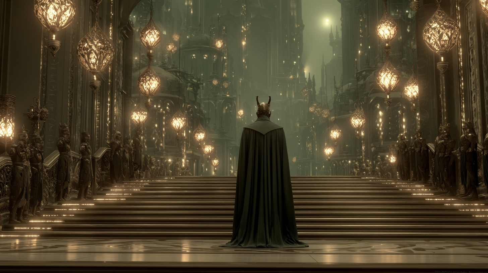

Power & Politics
The Political Landscape
Emperor Zamash-Kadur sits atop an infernal hierarchy where seven tiefling noble houses vie for influence, ministries change hands in shadow, and the appearance of stability masks deep institutional rot.

Emperor Zamash-Kadur
The ruler of the infernal empire, Emperor Zamash-Kadur has held the High Throne for 25 years. His Silver Jubilee in October 2025 was a month-long celebration that revealed as much about the cracks in the empire as about its power.
The Silver Jubilee as Political Theatre
Originally a week-long event, the celebration was extended to a full month. House Vyrune hosted the opening soiree at Sannid's Restaurant. The concluding city-wide concert drew 25,000 listeners. But the extension served a dual purpose: keeping the citizenry entertained while the Akmenos-to-Moreau ministry transition played out behind the scenes.
The Ministry Transition
Lord Akmenos's "unexpected retirement" as Minister of Information, followed by the rapid installation of Cassian Moreau from the Ministry of Defense, was met with surprise. Rumored sightings of Imperial Guard agents at Akmenos's estate suggest this was not voluntary. Moreau's relative youth and his leap from Defense to Information raises questions about who is truly directing imperial policy.
The Halvaren Connection
Lady Eloise Halvaren, cousin to the Emperor himself, vanished mid-toast at her own party in Skyway. Her wine glass hung suspended in mid-air. This is not mere gossip — the magical nature of her disappearance suggests forces operating at the highest levels of power.
Institutional Decay
The signs are everywhere: a record number of justiciar retirements creating court backlogs. The Sharn Watch hemorrhaging officers, leaving lower districts unpatrolled for days. The Department of Sanitation overwhelmed under its new director. Each individually minor; together, they paint a picture of an empire whose infrastructure is quietly failing.
Military Affairs
The Greensinger Rebellion in the Eldeen Reaches was officially quashed, with soldiers returning home by July 2025. But dissident protesters demanding "secret death tolls" were scattered by the Imperial Guard. Meanwhile, the Ministry of Defense's militarization continues unchecked.
Framework Expanded analysis to follow.